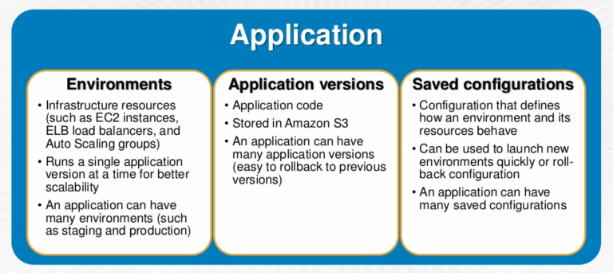
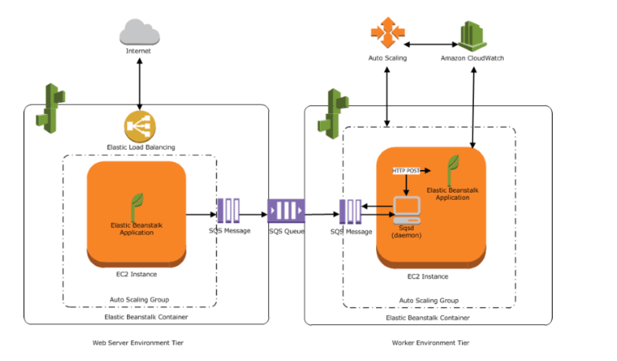

AWS Elastic Beanstalk¶
AWS Elastic Beanstalk helps to quickly deploy and manage applications in the AWS Cloud without having to worry about the infrastructure that runs those applications.
Elastic Beanstalk reduces management complexity without restricting choice or control.
Elastic Beanstalk enables automated infrastructure management and code deployment, by simply uploading, for applications and includes
- Application platform management
- Capacity provisioning
- Load Balancing
- Auto scaling
- Code deployment
- Health Monitoring
Once an application is uploaded, Elastic Beanstalk automatically launches an environment, creates and configures the AWS resources needed to run the code. After your environment is launched, it can be managed and used to deploy new application versions
AWS resources launched by Elastic Beanstalk are fully accessible i.e. EC2 instances can be sshed into
Elastic Beanstalk provides developers and systems administrators an easy, fast way to deploy and manage the applications without having to worry about AWS infrastructure.
CloudFormation, using templates, is a better option if the internal AWS resources to be used are known and fine grained control is needed
Elastic Beanstalk Components¶
{kind=link}
Application
- An Elastic Beanstalk application is a logical collection of Elastic Beanstalk components, including environments, versions, and environment configurations.
Application Version
- An application version refers to a specific, labeled iteration of deployable code for a web application
- Applications can have many versions and each application version is unique and points to an S3 object
- Multiple versions can be deployed for an Application for testing differences and helps rollback to any version if case of issues
Environment
- An environment is a version that is deployed onto AWS resources
- An environment runs a single application version at a time, but same application version can be deployed across multiple environments
- When an environment is created, Elastic Beanstalk provisions the resources needed to run the application version you specified.
Environment Configuration
- An environment configuration identifies a collection of parameters and settings that define how an environment and its associated resources behave
- When an environment’s configuration settings is updated, Elastic Beanstalk automatically applies the changes to existing resources or deletes and deploys new resources, depending upon the change
Configuration Template
- A configuration template is a starting point for creating unique environment configurations
{kind=link}
Elastic Beanstalk Architecture¶
{kind=link}
Elastic Beanstalk environment requires an environment tier, platform, and environment type
Environment tier determines whether Elastic Beanstalk provisions resources to support a web application that handles HTTP(S) requests or a web application that handles background-processing tasks
Web Environment Tier
An environment tier whose web application processes web requests is known as a web server tier.
AWS resources created for a web environment tier include a Elastic Load Balancer, an Auto Scaling group, one or more EC2 instances
Every Environment has a CNAME url pointing to the ELB, aliased in Route 53 to ELB url
Each EC2 server instance that runs the application uses a container type, which defines the infrastructure topology and software stack
A software component called the host manager (HM) runs on each EC2 server instance and is responsible for
- Deploying the application
- Aggregating events and metrics for retrieval via the console, the API, or the command line
- Generating instance-level events
- Monitoring the application log files for critical errors
- Monitoring the application server
- Patching instance components
- Rotating your application’s log files and publishing them to S3
Worker Environment Tier
- An environment tier whose web application runs background jobs is known as a worker tier
- AWS resources created for a worker environment tier include an Auto Scaling group, one or more Amazon EC2 instances, and an IAM role.
- For the worker environment tier, Elastic Beanstalk also creates and provisions an SQS queue, if one doesn’t exist
- When a worker environment tier is launched, Elastic Beanstalk installs the necessary support files for the programming language of choice and a daemon on each EC2 instance in the Auto Scaling group reading from the same SQS queue
- Daemon is responsible for pulling requests from an SQS queue and then sending the data to the web application running in the worker environment tier that will process those messages
- Elastic Beanstalk worker environments support SQS dead letter queues which can be used to store messages that could not be successfully processed. Dead letter queue provides the ability to sideline, isolate and analyze the unsuccessfully processed messages
One environment cannot support two different environment tiers because each requires its own set of resources; a worker environment tier and a web server environment tier each require an Auto Scaling group, but Elastic Beanstalk supports only one Auto Scaling group per environment.
Elastic Beanstalk with other AWS Services¶
Elastic Beanstalk supports VPC and launches AWS resources, such as instances, into the VPC
Elastic Beanstalk supports IAM and helps you securely control access to your AWS resources.
CloudFront can be used to distribute the content in S3, after an Elastic Beanstalk is created and deployed
CloudTrail
- Elastic Beanstalk is integrated with CloudTrail, a service that captures all of the Elastic BeanstalkAPI calls and delivers the log files to an S3 bucket that you specify.
- CloudTrail captures API calls from the Elastic Beanstalk console or from your code to the Elastic Beanstalk APIs and help to determine the request made to Elastic Beanstalk, the source IP address from which the request was made, who made the request, when it was made etc.
RDS
- Elastic Beanstalk provides support for running RDS instances in the Elastic Beanstalk environment which is ideal for development and testing but not for production.
- For a production environment, it is not recommended because it ties the lifecycle of the database instance to the lifecycle of application’s environment. So it the Elastic beanstalk environment is deleted, the RDS instance is deleted as well
- It is recommended to launch a database instance outside of the environment and configure the application to connect to it outside of the functionality provided by Elastic Beanstalk.
- Using a database instance external to your environment requires additional security group and connection string configuration, but it also lets the application connect to the database from multiple environments, use database types not supported with integrated databases, perform blue/green deployments, and tear down your environment without affecting the database instance.
S3
- Elastic Beanstalk creates an S3 bucket named elasticbeanstalk-region-account-id for each region in which environments is created.
- Elastic Beanstalk uses the bucket to store application versions, logs, and other supporting files.
- It applies a bucket policy to buckets it creates to allow environments to write to the bucket and prevent accidental deletion